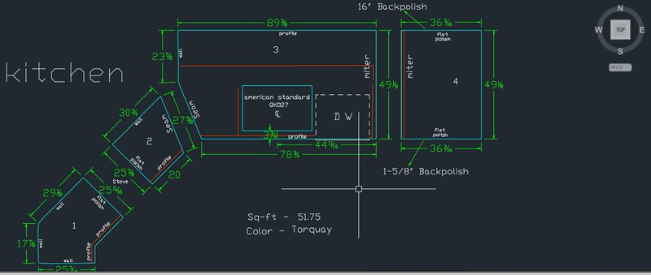
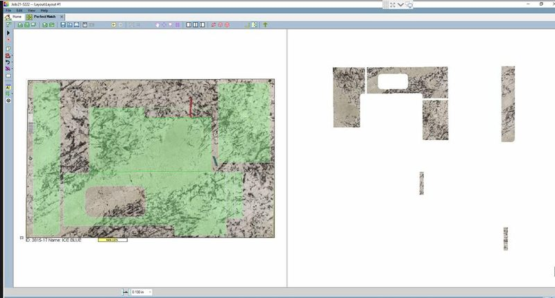
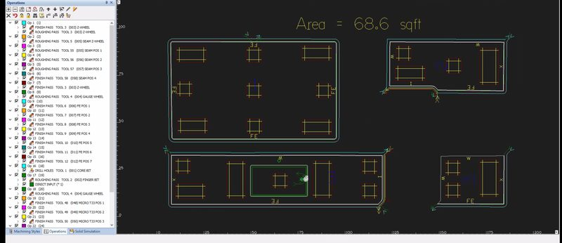

Técnicos dedicados que aprenden su proceso y trabajan en su horario.
iGen provee diseñadores CAD y programadores CNC remotos a fabricadores de piedra y countertops en todo Estados Unidos. Tiempo completo o medio tiempo, un técnico o un equipo según su carga de trabajo, entrenados en su flujo de trabajo y asignados exclusivamente a su taller.
- Contratado, entrenado y supervisado por iGen
Usted recibe el trabajo, sin contratar, entrenar ni supervisar.
- Trabajan en su horario
Sus técnicos están disponibles durante las horas de trabajo de su taller.
- Tiempo completo, medio tiempo, uno o varios
Empiece con un técnico y agregue más cuando aumente el trabajo. Cada uno se entrena en su proceso y se asigna exclusivamente a usted.
- Más de 20 años de experiencia
En CAD y programación CNC para la industria de countertops.
Todo lo que hay entre la plantilla y la máquina.
Dibujo, layouts y programación para la industria de countertops de piedra, dentro de su propio flujo de trabajo.
Dibujos CAD
Dibujos listos para el taller, creados a partir de sus plantillas, bosquejos, boletines y planos de gabinetes.
Programas CNC
Trayectorias y programas para su sierra, waterjet y CNC, escritos en sus propias máquinas mediante acceso remoto.
PDFs de taller
Planos de taller y PDFs detallados con los que pueden trabajar sus equipos de fabricación e instalación.
Layouts de placas y nesting
Layouts y nesting eficientes para aprovechar cada placa al máximo.
Su primer técnico está listo en aproximadamente una semana.
Primero aprendemos su proceso, lo documentamos, lo practicamos y luego empezamos. Así es la primera semana.
Llamada inicial
Programamos una conferencia y/o una sesión de 60 minutos compartiendo pantalla.
Observamos a su técnico
iGen observa a uno de sus técnicos internos completar un par de trabajos.
Documentamos su proceso
iGen crea procedimientos operativos estándar y diagramas de flujo para su proceso específico.
Trabajos de práctica
Su técnico de iGen completa un día de trabajos de práctica y recibe su retroalimentación.
Ajustamos
iGen ajusta el proceso según la retroalimentación de los trabajos de práctica.
Listo para empezar
Su técnico dedicado de iGen está listo para comenzar.
Personal de calidad sin la carga de contratar.
Técnicos dedicados del equipo de iGen, trabajando como parte del suyo.
- Ahorro en nómina, beneficios de empleados e impuestos.
- Evite la costosa inversión en hardware, software, espacio de trabajo y supervisión.
- Personal de calidad sin tener que contratar, administrar ni entrenar.
- Técnicos con título universitario.
Dibujos, layouts y programas de trabajos reales.






Lo que conviene saber antes de llamar.
Cuéntenos sobre su taller.
Una llamada corta basta para ver si los técnicos de iGen encajan con su flujo de trabajo.